AuswertungenAnalyses
Brückner hat sein Buch mit Tabellen und Zahlenreihen gefüllt: Wetterbeobachtungen, Volkszählungen, Ernten, Gerichtsfälle, Stiftungen. Die 32 Auswertungen machen diese Zahlen sichtbar. Jede nennt die Seiten, aus denen sie stammt, legt Methode und Umrechnungen offen und bietet die Daten zum Herunterladen.Brückner filled his book with tables and series: weather observations, censuses, harvests, court cases, foundations. The 32 analyses make these figures visible. Each names the pages it draws on, discloses its method and unit conversions and offers its data for download.
Die Natur des LandesThe nature of the land
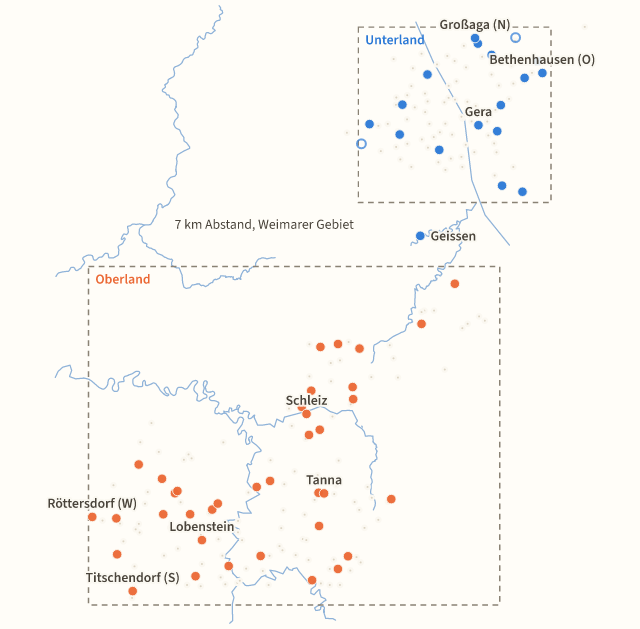
Lage, Fläche und GrenzenPosition, area and boundariesBrückner druckt Länge und Breite von 57 trigonometrisch bestimmten Punkten, den Umfang beider Landesteile nach Nachbarstaaten und mehrere …Brückner prints longitude and latitude of 57 points fixed by triangulation, the perimeter of both parts by neighboring state, and several area …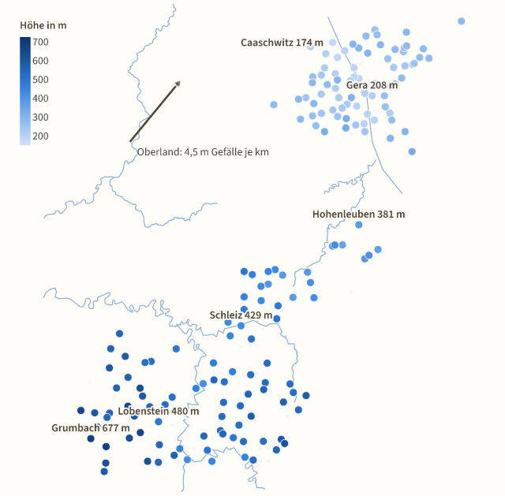
Berge und HöhenlageMountains and altitudeBrückner verzeichnet die Meereshöhe von 264 bewohnten Punkten und 263 Höhenpunkten in preußischen Dezimalfuß.Brückner lists the altitude of 264 inhabited points and 263 height points in Prussian decimal feet.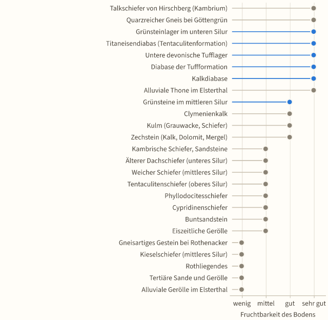
Gesteine, Böden und BodenschätzeRocks, soils and mineral resourcesIn der geognostischen Übersicht beschreibt Prof.In the geological overview Prof.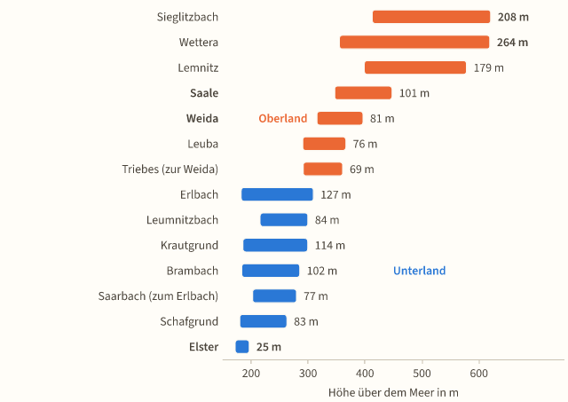
Flüsse, Quellen und HeilquellenRivers, springs and mineral springsBrückner gliedert das Gewässernetz in vier Flusssysteme, zählt 83 Zuflüsse erster Ordnung auf und gibt für 28 Bäche und Flüsse Höhen an.Brückner divides the drainage network into four river systems, lists 83 first-order tributaries and gives heights for 28 streams and rivers.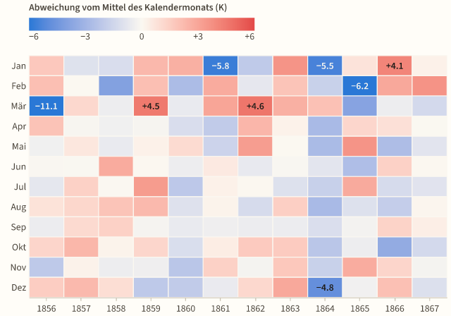
Wetter in Gera 1856–1867Weather in Gera, 1856–1867Für Gera druckt Brückner Wetterbeobachtungen aus zwölf Jahren (1856 bis 1867): Monatsmittel der Temperatur und des Luftdrucks, die Regenmenge seit …For Gera, Brückner prints twelve years of weather observations (1856 to 1867): monthly mean temperature and air pressure, rainfall from 1860, and …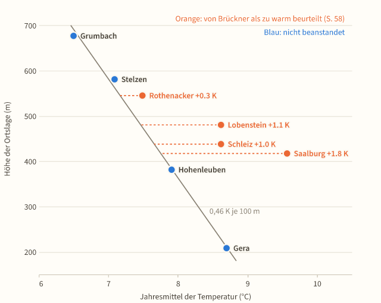
Klima an den BeobachtungsortenClimate at the observation sitesNeben Gera druckt Brückner Temperaturreihen für Hohenleuben, Schleiz und Rothenacker, Jahresmittel für vier weitere Orte sowie Nebel-, Niederschlags- …Besides Gera, Brückner prints temperature series for Hohenleuben, Schleiz and Rothenacker, annual means for four more places, and counts of fog, …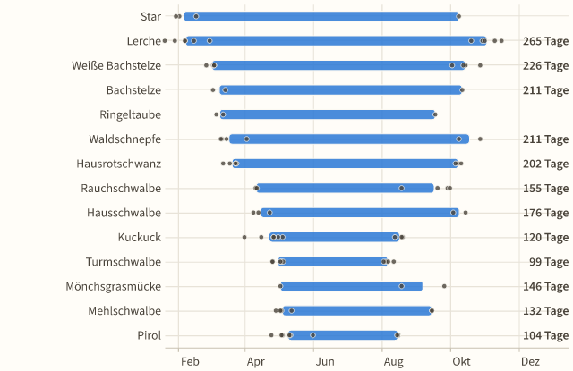
Vogelzug und Blüte im JahreslaufBird migration and flowering through the yearBrückner druckt Ankunft und Abzug von 14 Zugvögeln in Gera (1859 bis 1864) sowie die Tage des ersten Aufblühens von zwölf Pflanzen in Gera (1851 bis …Brückner prints the arrival and departure of 14 migratory birds at Gera (1859 to 1864) and the days of first flowering of twelve plants at Gera (1851 …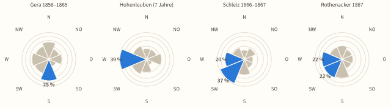
Wind und GewitterWind and thunderstormsBrückner wertet Windrichtungen und Gewitter aus.Brückner analyzes wind directions and thunderstorms.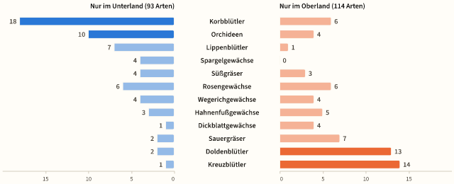
PflanzenweltFloraBrückner zählt für das Reußenland 1.093 Blütenpflanzen und 658 blütenlose Pflanzen, zusammen 1.751 Arten.For the Reuss territory Brückner counts 1,093 flowering and 658 flowerless plants, 1,751 species in all.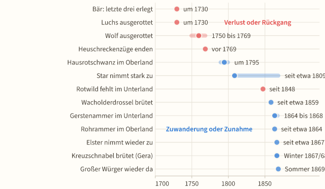
Tierwelt und ihr WandelFauna and its changeBrückner nennt für das Fürstentum rund 380 Wirbeltierarten und 489 Schmetterlinge bei Zeulenroda.Brückner lists around 380 vertebrate species for the principality and 489 butterflies and moths near Zeulenroda.
Das VolkThe people
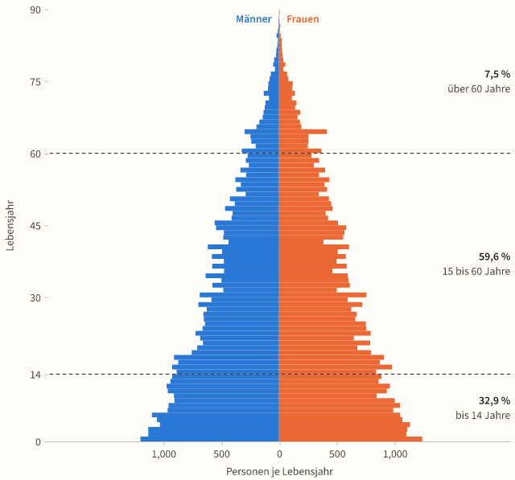
Alter, Geschlecht und Familienstand 1864Age, sex and marital status in 1864Die Zählung von 1864 gliedert die 86.472 Einwohner nach Lebensjahren, Familienstand und Geburtsort.The census of 1864 classifies the 86,472 inhabitants by year of life, marital status and place of birth.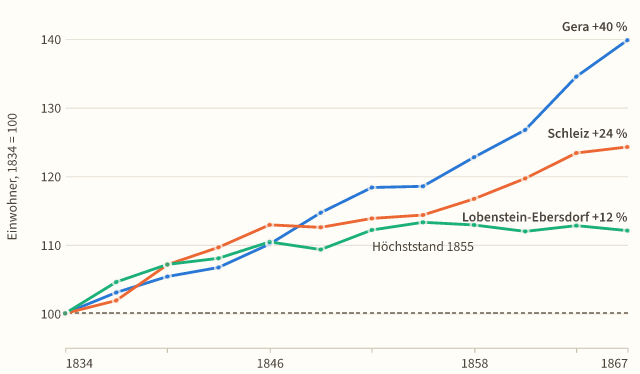
Die Bevölkerung 1647–1867The population, 1647–1867Von 1647 bis 1867 wuchs die Bevölkerung des Fürstentums von 23.913 auf 87.974 Menschen, auf fast das Vierfache.Between 1647 and 1867 the principality’s population grew from 23,913 to 87,974, almost fourfold.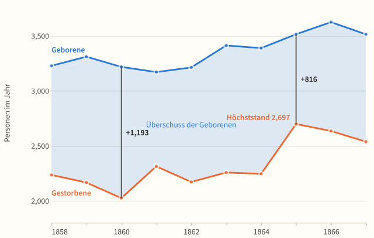
Geburten, Ehen, Sterbefälle und Wanderung 1858–1867Births, marriages, deaths and migration, 1858–1867Brückner verzeichnet für 1858 bis 1867 im Durchschnitt 3.358 Geburten, 2.327 Sterbefälle und 855 Trauungen im Jahr.For 1858 to 1867 Brückner records on average 3,358 births, 2,327 deaths and 855 marriages a year.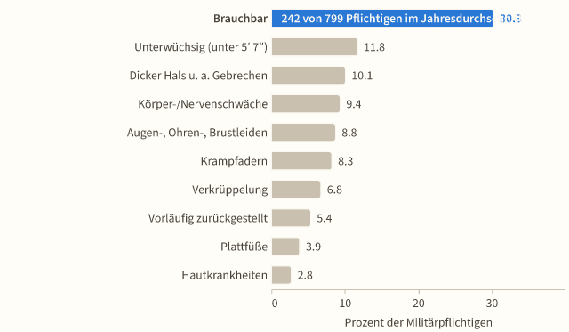
Krankheit, Ärzte und SeuchenIllness, physicians and epidemicsBrückner stützt sein Bild der Volkskrankheiten auf wenige Quellen: eine Arztpraxis in Lobenstein, die Krankenhausstation Gera, Hohenleuben und die …Brückner bases his picture of the common diseases on few sources: a physician’s practice in Lobenstein, the hospital ward in Gera, Hohenleuben and …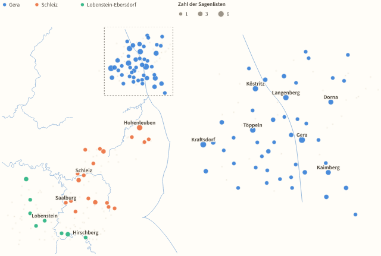
Sagen, Bräuche und VolksmedizinLegends, customs and folk medicineBrückner verzeichnet Sagenorte, Jahresbräuche und Hausmittel des Landvolks.Brückner records the legend sites, annual customs and household remedies of the country people.
ErwerbslebenEconomic life
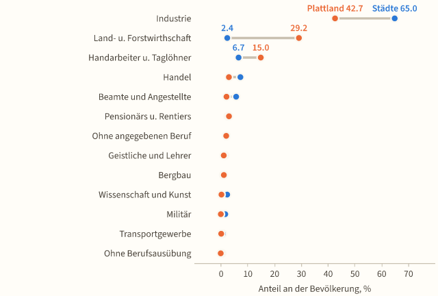
Berufe, Gewerbe und Industrie 1864Occupations, trades and industry in 1864Die Erhebung von 1864 ordnet alle 86.472 Einwohner 13 Berufsklassen zu.The survey of 1864 assigns all 86,472 inhabitants to 13 occupational classes.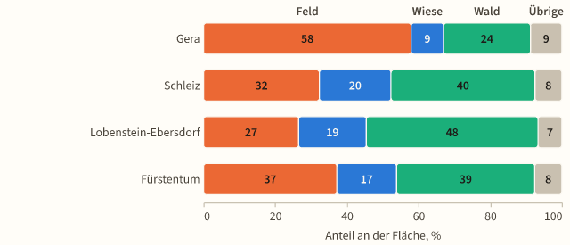
Boden, Besitz und ErnteLand, ownership and harvestDie Vermessung von 1854 verteilt 322.746 Morgen auf Nutzungsarten: Das Unterland ist Ackerland (58 Prozent Feld), das Oberland Wald und Wiese.The survey of 1854 divides 322,746 Morgen among kinds of use: the Unterland is arable land (58 percent field), the Oberland woodland and meadow.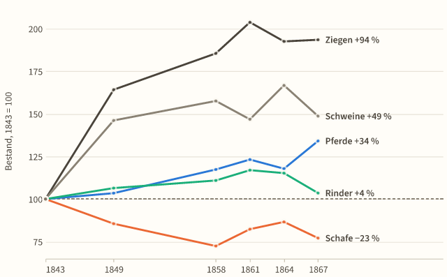
Viehbestand 1843 bis 1867Livestock, 1843 to 1867Die Viehzählungen von 1843 bis 1867 zeigen eine Verschiebung: Die Zahl der Ziegen stieg um 94 Prozent, die der Schweine um 49 und die der Pferde um …The livestock counts from 1843 to 1867 show a shift: goats increased by 94 percent, pigs by 49 and horses by 34 percent, cattle by only 4 percent, …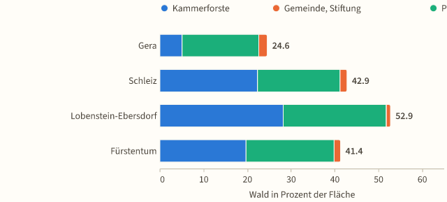
Wald und HolzForests and timberDer Wald des Fürstentums umfasste um 1868 133.635 Morgen oder 34.120 Hektar, 41,4 Prozent der Fläche, 94,5 Prozent davon Nadelholz.Around 1868 the principality’s forest covered 133,635 Morgen or 34,120 hectares, 41.4 percent of the area, 94.5 percent of it conifers.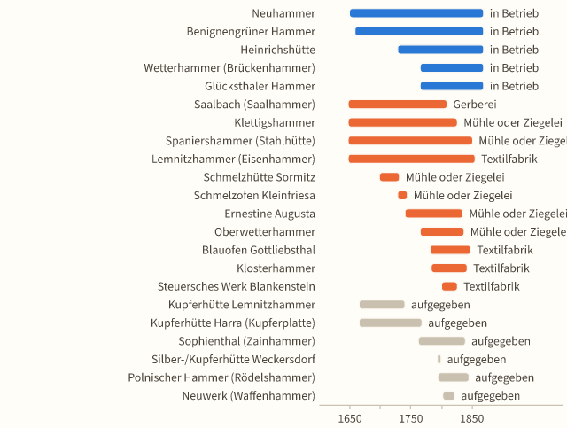
Bergbau, Hütten und SalzMining, ironworks and saltBrückner verfolgt den Bergbau von den Silbergruben bei Schleiz (1318) bis zur Saline Heinrichshall.Brückner traces mining from the silver mines near Schleiz (1318) to the Heinrichshall saltworks.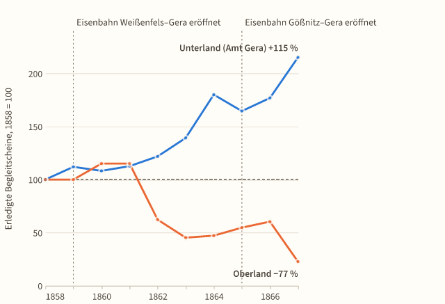
Handel, Märkte und VerkehrTrade, markets and transportAls Maß für den Handel druckt Brückner die Zahl der erledigten Begleitscheine: In Gera stieg sie von 316 (1858) auf 680 (1867), im Oberland sank sie …As a measure of trade Brückner prints the number of customs transit documents processed: in Gera it rose from 316 (1858) to 680 (1867), in the …
Der StaatThe state
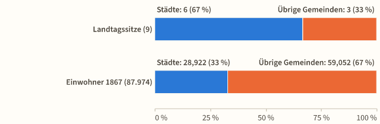
Landtag, Verwaltung und MilitärLandtag, administration and militaryNach Brückner zählte der Landtag 13 Mitglieder, davon 9 aus Wahlen der Städte und der übrigen Gemeinden.According to Brückner the Landtag had 13 members, 9 of them elected by the towns and the other communities.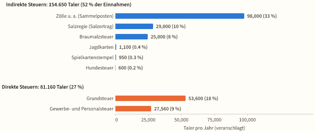
Staatshaushalt, Schulden und VersicherungState budget, debt and insuranceFür die Finanzperiode 1866/68 veranschlagte der Staat Einnahmen von 296.000 und Ausgaben von 290.000 Talern im Jahr; 52 Prozent der Einnahmen kamen …For the financial period 1866/68 the state budgeted revenue of 296,000 and expenditure of 290,000 thalers a year; 52 percent of the revenue came from …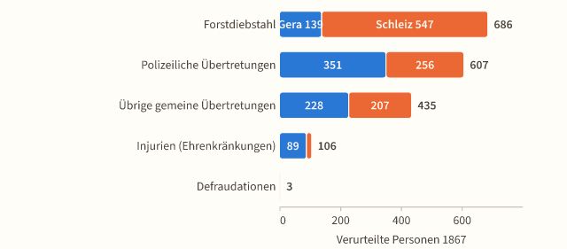
Gerichte und Strafen 1864–1867Courts and punishments, 1864–1867Die Rechtspflege lag bei acht Justizämtern, zwei Kreisgerichten und den Staatsanwaltschaften.Justice was administered by eight Justizämter (single-judge courts), two Kreisgerichte (district courts) and the public prosecutors.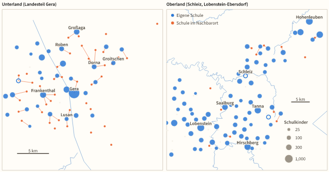
Kirchen und SchulenChurches and schoolsKirchlich gliederte sich das Fürstentum in 3 Ephorien mit 45 Parochien, 102 Kirchen und 68 Geistlichen; hinzu kamen 115 Volksschulen mit 206 Lehrern …Ecclesiastically the principality was divided into 3 ephories with 45 parishes, 102 churches and 68 clergy; in addition there were 115 elementary …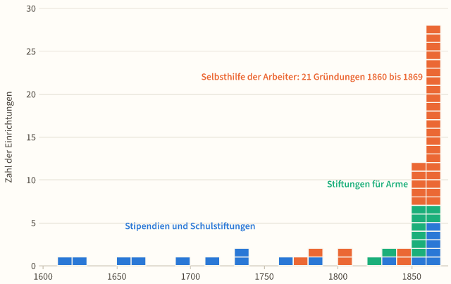
Armenpflege, Kassen und StiftungenPoor relief, funds and foundationsBrückner nennt 32 Selbsthilfeeinrichtungen der arbeitenden Klassen mit Gründungsjahr, 13 Stiftungen für Arme mit 49.010 Taler Kapital und 18 …Brückner names 32 self-help institutions of the working classes with a founding year, 13 foundations for the poor with 49,010 thalers of capital and …
Geschichte des Landes und des FürstenhausesHistory of the land and the princely house
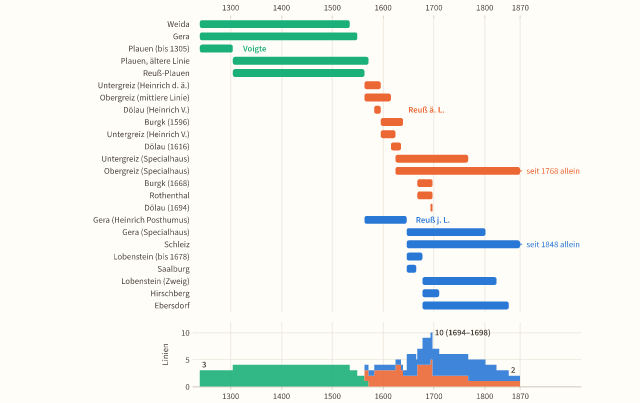
Landesgeschichte: Erwerb, Verlust und TeilungenHistory of the land: gains, losses and divisionsBrückner erzählt die Geschichte der Voigte von Weida, Gera und Plauen und des Hauses Reuß als Folge von Käufen, Pfändern, Erbfällen und Teilungen.Brückner tells the history of the Voigts of Weida, Gera and Plauen and of the house of Reuss as a series of purchases, pledges, successions and …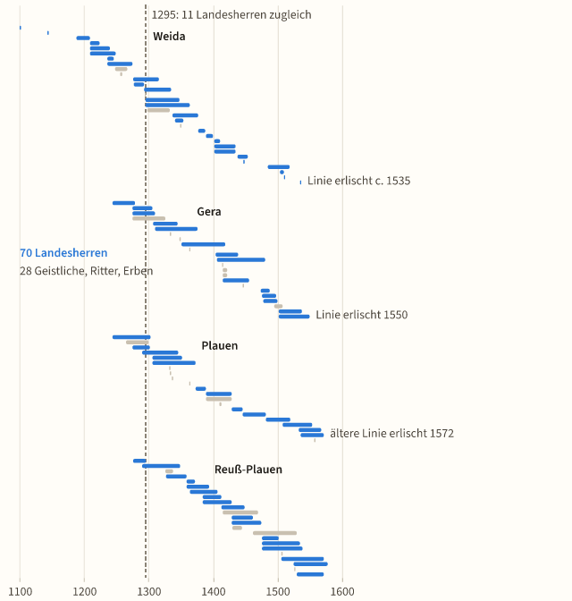
Die Voigte und das Haus ReußThe Voigts and the house of ReussBrückners Stammtafeln führen die Männer der Voigte von Weida, Gera und Plauen mit Jahreszahlen auf: 98 Heinriche, 70 davon als Landesherren.Brückner’s genealogical tables list the men of the Voigts of Weida, Gera and Plauen with years: 98 men named Heinrich, 70 of them as lords.
OrtskundeThe places
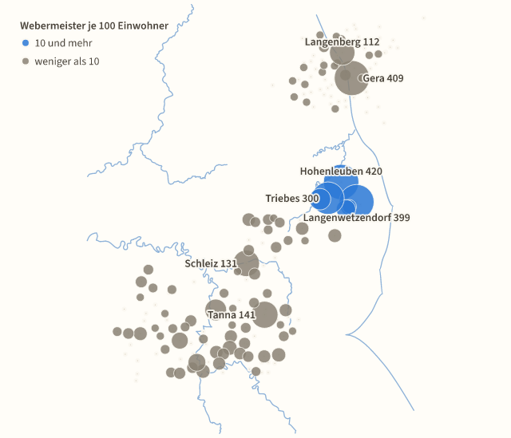
Bauern, Häusler und Handwerker in den DörfernFarmers, cottagers and craftsmen in the villagesFast jeder Ortsartikel Brückners nennt Handwerker, Gliederung der Einwohner und Pacht.Almost every place article of Brückner names the craftsmen, the social divisions of the inhabitants and the rent.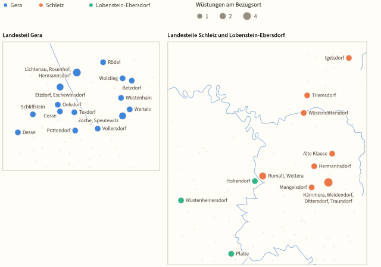
Ortsnamen, erste Erwähnungen und WüstungenPlace names, first mentions and deserted villagesFür 152 von 173 Gemeinden nennt Brückner die erste urkundliche Erwähnung; Orte im Landesteil Gera sind früher belegt.For 152 of 173 municipalities Brückner gives the first documentary mention; places in the district of Gera are attested earlier.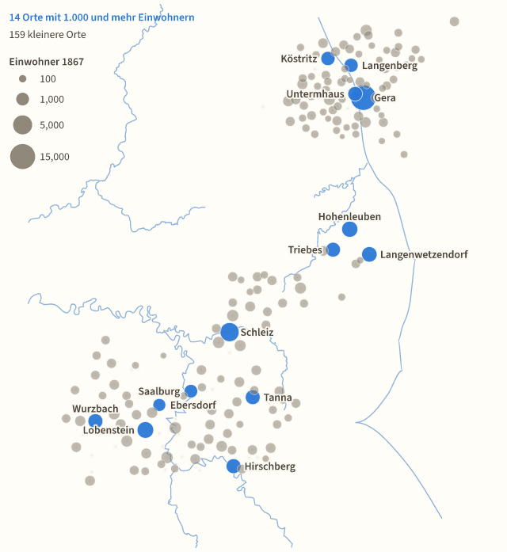
Siedlungen und Häuser 1867Settlements and houses in 1867Brückner beschreibt 173 Gemeinden mit zusammen 87.966 Einwohnern.Brückner describes 173 municipalities with 87,966 inhabitants in total.